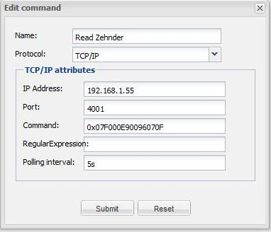

|
This page last changed on Nov 05, 2013 by hennemarc.
Hello all,
I am controlling my ventilation system via TCP/IP commands by sending HEX strings to the device. A pure command works perfectly, but now I would like to read the status of the unit. That works as well by sending the status hex command as shown below:

The unit is sending a hex string back.
What I am not able to do is to "receive" the reply from the unit into a label by using a custom sensor.
For the moment I would be happy if I am able to display the (raw) hex string coming from the device, without doing some parsing activities, but this does not work.
Can anybody give me a hint how to do this?
As a second step I would be interested how to work with the Regular Expression in the TCP/IP command. I have read some forum posts, but it seems that the Regex is quite difficult to create. I found a testing tool in the internet, but for this I need the Regex created before. Is there a HowTo available how to create (not to test) the Regular Expression.
|
You need to use a custom sensor for displaying arbitrary string.

Posted by atamariya at Nov 05, 2013 15:34
|
|
OK, using a custom sensor works, but now I see that the reply is in binary and not as ASCII. Is there a way to convert this back to ASCII, so readable letters?
Posted by hennemarc at Nov 05, 2013 21:00
|
|
Not possible without some programming.
Posted by atamariya at Nov 06, 2013 03:37
|
|
Can you give an example(s) of the returned string? I am not at all a regex expert, but would love to give it a try.
Posted by pz1 at Nov 06, 2013 09:02
|
|
If you have the result in a custom sensor you could use a rule to convert that into a string.
There are some forum posts with examples for conversions with rules
Posted by mredeker at Nov 06, 2013 11:52
|
|
Hello,
actually I don't know how to provide an example of the received answer, because it seems that the answer from the device is sent in binary mode, in other words I do not see the the HEX strings like 0x07 F0 00 68 0D 03 3C 20 43 41 33 35 30 20 6C 75 78 65 7B 07 0F, because the results are non printable ASCII Codes.
I am thinking about to add a rule for this sensor with the java command getBytes(), but actually I do not know how to implement this or whether this is supported by the drool engine.
Posted by hennemarc at Nov 07, 2013 22:22
|
|
Then you would just use the string from the custom sensor as a transport media to get the hey values from the command into the rules.
This could work but I don't know.
On the rule side you would use getBytes() and then only extract what ever you need and convert that back into a string.
Posted by mredeker at Nov 07, 2013 23:08
|
|
{kind=link}